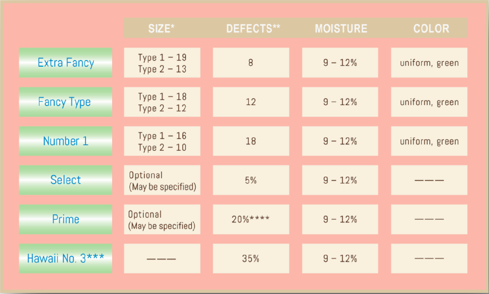

初次看到咖啡樹，實在令人驚艷，一顆顆的咖啡果實，外型像極了櫻桃，英文稱法就是CHERRY，中文多稱為「咖啡櫻桃」。從莊園結實纍纍，採摘完成後，不論之後的處理法，都會經過篩去劣質浮豆的過程。
『日曬法』會鋪在日曬場兩到三週，等咖啡豆內水分含量降至10-14%後，再行去除外殼動作。有股特殊的香氣是其特色，但是如果日曬衛生環境不佳，則易出現枯枝落葉或發霉情況。
『水洗法』則利用機器去除果皮與果肉，在經過發酵溶解果膠，再利用清水洗淨，之後可採日曬或機器風乾方式讓水分含量降至10-14%後，再去除外殼。經過發酵水洗，咖啡多半呈現較清澈明亮的果酸口感。
而『蜜處理方式』則是不用清水洗淨發酵後的果膠，而是使用天然日曬降低豆中水分含量。融合日曬與水洗手法，一般來說香氣較水洗濃厚，口感也較平衡。
處理完的咖啡生豆保存在一定溫溼度環境中，需要時再拿出烘製成適當培度。視情況，生豆可被保存數週到數年不等。有經驗的烘豆師提醒我們，購買時要注意生豆履歷處理日期，不要太過仰賴烘豆日期，才能確保每一個環節都很新鮮。
根據夏威夷咖啡協會規定，夏威夷所產咖啡豆分級標準如下
所謂Type 1是指一顆咖啡果裡面有兩半扁平的豆子。一般在市面上看到的屬於這種豆子。而Type2指的是一顆咖啡果裡只有一顆圓豆，PEABERRY，亦被稱為公豆。過去曾被當成瑕疵豆丟棄，卻意外中發現或許是這一包胎中所蘊含養分更多，其風味更加純厚，其產量約為總5%的情況下，物以稀為貴，近來在精品豆市場頗為風行。由於量少質精，為協助消費者辨識，協會以此標準進行分級。如圖所示，最為稀少昂貴的為Extra Fancy，其次依序為 Fancy、NO1、Select及Prime。前三者生豆顏色青綠均一。Extra Fancy豆徑最大，Fancy其次，再者為NO1等級。Extra Fancy與Fancy的瑕疵豆數控制極為嚴格，需經過手工挑揀篩除，故為精品中的上品。